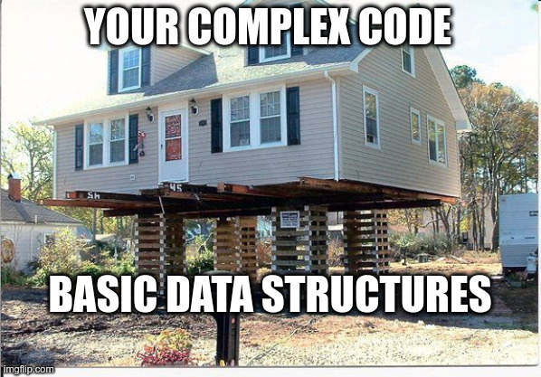
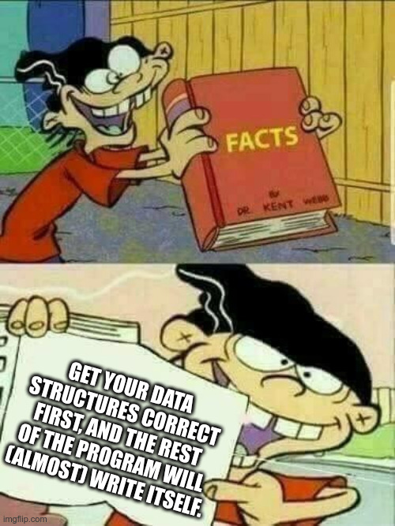

Week #02
Sublinear complexity data structures (map, set, priority_queue) · Problems: Weekly Problems #02
Main learning outcomes for this class
- Big O Notation:
- I understand the basic meaning of Big O Notation
- I know how to estimate the complexity of simple programs and how to use it to estimate if my program will not obtain time limit exceeded when submitted
- Fundamental Data Structures:
- I know the concept of stacks, queues and deques and how to use them on my programming language
- I know the concept of sets (set and multiset) and how to use them on my programming language
- I know the concept of maps/dictionaries (map and multimap) and how to use them on my programming language
- I know the concept of priority queues (priority_queue) and how to use them on my programming language
- I understand the concept of ordered data structures and how to traverse them using iterators
- I know that there are non ordered data structures for the fundamental data structures (ex: unordered_set and unordered_map)
- I know that there are policy based data structures as a GNU extension that provide two additional operations in O(log n): order_of_key and find_by_order
- Fast I/O:
- I understand that some problems might require a lot of input and/or output and therefore need efficient I/O primitives
- I know how to perform fast IO on my preferred language
Study Material
- Big O Notation
- How fast is fast? Order of magnitude analysis [Bruce Merry] (brief introduction to big-oh notation)
- Big O notation [Wikipedia]
- Slides from my Design and Analysis of Algorithms class [Pedro Ribeiro, in portuguese 🇵🇹] (video lectures) [similar slides in english 🇬🇧, for my Algorithms class]
- Doing the math with big o: cheat sheet [Pedro Ribeiro]
- Chapter 2 of Competitive Programmer's Handbook book
- Programming Language References
- C++ Reference: cppreference.com | cplusplus.com | devdocs.io
- Java Reference: Oracle - Java 17 API
- Fundamental Data Structures:
- cppreference containers library
- The C++ Standard Template Library (STL) [GeeksforGeeks] (includes examples in C++ for native all data structures discussed in this class)
- Java Collection Tutorial (version 2) [GeeksforGeeks] (includes examples in Java for all native data structures discussed in this class)
- Slides from my Algorithms and Data Structures Class (about balanced binary search tree) | Visualization of Red-Black Trees
- PBDS @ GNU | Ordered Set and GNU C++ PBDS [GeeksforGeeks] | C++ STL: PBDS [CodeForces] | PBDS [Ansh Gupta @ Medium]
- Sections 2.1 and 2.2 of the Competitive Programming book
- Chapter 4 of Competitive Programmer's Handbook book
- Fast I/O:
- Fast Reading and Printing for C, C++ and Java [Pedro Ribeiro, in Portuguese 🇵🇹]
(note: FastScanner and FastPrint are available at Mooshak, no need to include their code) - Fast Input & Output for C++ and Java [USACO]
- Fast I/O for Competitive Programming in Python [GeeksforGeeks]
- Fast Reading and Printing for C, C++ and Java [Pedro Ribeiro, in Portuguese 🇵🇹]
See it step by step
How fast do the usual complexities grow? Move n from 1 to 16 and compare. With about 108 simple operations per second, n² is fine for n = 104 but 2ⁿ is already too slow for n = 40.
For n = 16: n < n log n < n² < n³ < 2ⁿ. 2ⁿ overtakes n² at n = 5 and n³ at n = 10.
(some) Training Problems
- Mooshak:
- [Mooshak PC004] - Cool Sequences (simple usage of map to keep frequency)
- [Mooshak PC010] - Concert Tickets (multiset + upper_bound + erase)
- Codeforces:
- [CodeForces 978A] - Remove Duplicates (use a set of integers to know which elements already exist)
- [CodeForces 499B] - Lecture (use map to associate words with their translation)
I want my memes!
😁 big O notation

😁 the role of containers...

😁 data structures!

Content by Pedro Ribeiro (DCC/FCUP), migrated from www.dcc.fc.up.pt/~pribeiro/aulas/pc2627/week02.html to demonstrate the UC Design Kit.